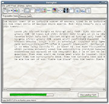
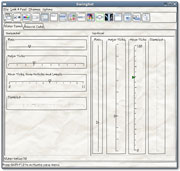

[ SourceForge page ] |
[ Demo using WebStart ] |
|
The idea is to try to develop a look and feel that can be used in Java applications that looks informal and provisional, yet be fully functional for development. Often when people see a GUI mock-up, or a complete GUI without full functionality, they assume that the code behind it is working. While this can be used to sleazy advantage, it can also convince people who ought to know better (like your managers) that you are already done when you have just barely begun, or when only parts are complete. No matter how much you speak to their rational side, the emotional response still says "Done!". Which after a while leads to a later question: "That was done months ago! What are they doing? Playing Quake?" A good article on this is Joel on Software's "The Iceberg Secret, Revealed".
So the idea is to create a complete look and feel that can be used while the thing is not done which will convey an emotional message to match the rational one. As pieces of the work are done, the GUI for those pieces can be switched to use the "formal" (final) look and feel, allowing someone looking at demos over time to see the progress of the entire system reflected in the expression of the GUI. This is all done using the Java Swing pluggable Look & Feel framework.
 Various buttons |
 Disabled things |
 A progress bar (scribbled in at the bottom) |
 A combo box (postit-style popup menu) |
 Various sliders |
A table |
 Internal frames (blueprint theme) |
 File chooser (blueprint theme) |
 A table (blueprint theme) |
{kind=link}
{kind=link}
{kind=link}
{kind=link}
{kind=link}
{kind=link}